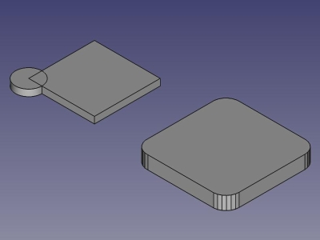

|
| Posizione nel menu |
|---|
| OpenSCAD → Minkowski |
| Ambiente |
| OpenSCAD |
| Avvio veloce |
| Vedere anche |
Contents |
Descrizione
Consultare: http://en.wikibooks.org/wiki/OpenSCAD_User_Manual/Transformations oppure http://doc.cgal.org/latest/Minkowski_sum_3/index.html
Esegue la somma Minkowski di poliedri 3D
Definizione Matematica:
Per ottenere una somma Minkowski aggiungere ogni elemento del sottoinsieme A ad ogni elemento del sottoinsieme B.
Definizione Geometrica:
Lo sweep dell'elemento A lungo tutti i bordi dell'elemento B. La somma Minkowski è lo spazio che risulta occupato da entrambi gli elementi.

Esempio di somma Minkowski applicata tra un cilindro e un cubo.
Notare che l'altezza della somma Minkowski è l'altezza del cilindro più l'altezza del cubo.
{kind=link}
Uso
- Selezionare le forme nella vista ad albero o nella vista 3D
- Cliccare su
 o scegliere OpenSCAD → Minkowski nel menu in alto.
o scegliere OpenSCAD → Minkowski nel menu in alto.
Limitazioni
La funzione richiede che OpenSCAD sia installato e configurato nelle Modifica → Preferenze
Note